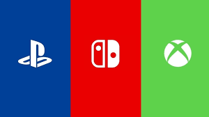
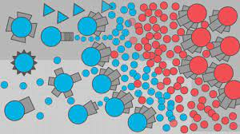

SOBRE O SITE
Visão Geral: GameVerse é o destino definitivo para todos os amantes de jogos, independentemente de você ser um jogador casual ou um verdadeiro mestre dos games. Nosso site oferece uma experiência única e envolvente para todos os tipos de jogadores.
Biblioteca Extensa de Jogos: GameVerse apresenta uma vasta biblioteca de jogos, incluindo títulos de todos os gêneros imagináveis, desde RPGs épicos até jogos de quebra-cabeça desafiadores.
Avaliações e Recomendações: Quer saber quais jogos estão em alta? GameVerse oferece avaliações detalhadas, análises de jogadores e recomendações personalizadas para ajudá-lo a escolher seu próximo jogo.
Suporte Técnico: Oferecemos suporte técnico dedicado para ajudar com problemas técnicos, atualizações de jogos e solução de problemas.
Notícias e Atualizações: Fique por dentro das últimas notícias da indústria de jogos, lançamentos de jogos e atualizações importantes por meio de nosso portal de notícias.
Comunidade Ativa: Nossa comunidade de jogadores é vibrante e acolhedora. Você pode se juntar a fóruns de discussão, grupos de jogadores e participar de eventos e torneios emocionantesM

AVALIAÇÃO DA COMUNIDADE
Aqui abriram topicos de vários jogos onde a comuninade pode avalialos e dar sua opinião sobre sua experiência sobre eles:
O SUPORTE
Aqui o Público é atendido Os desenvolvedores ou até mesmo os STAFFS dos site podem tirar suas Duvidas. Duvidas:
Atualização
O site esta em desenvolvimento e será inalgurado com alguns jogos.
Comunidade
Nosso chat de comunidade proporciona uma maneira instantânea de se comunicar. Os participantes podem enviar mensagens de texto, emojis, imagens e, em alguns casos, até mesmo fazer chamadas de voz ou vídeo em tempo real.
Acessibilidade
membros da comunidade podem acessar o chat por meio de aplicativos para dispositivos móveis ou navegadores da web, tornando-o acessível em qualquer lugar com conexão à internet.
Moderação
Muitos chats de comunidade possuem moderadores ou administradores que monitoram as conversas para garantir um ambiente respeitoso e seguro para todos os membros.
Moderação
Portugues, Matematica, Ingles, Ciencias, Geografia, Historia, Educação fisica, Vivencia Corporal, Pratica Experimental, Protagonismo, Emprendedorismo, ensino Orientado, Projeto de Vida, Programação e Tecnologia Computacional. Educação Financeira, Pensamento Computacional.
CLICK AQUI E PARA JOGAR NOSSOS JOGOS 
Abaixo está o jogo que mostramos acima:
JOGUE UM POUCO :)Vídeo
Gameplay de um dos jogos.